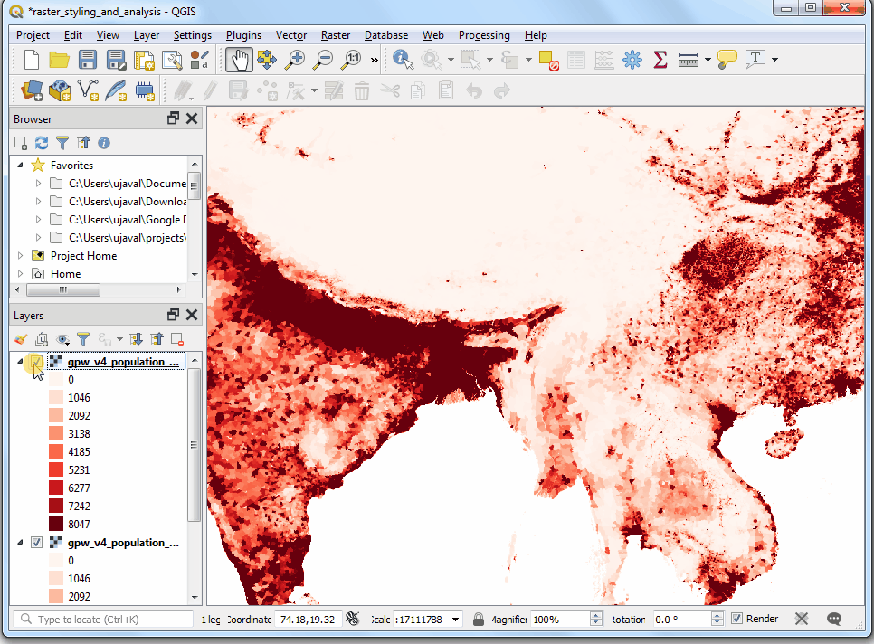
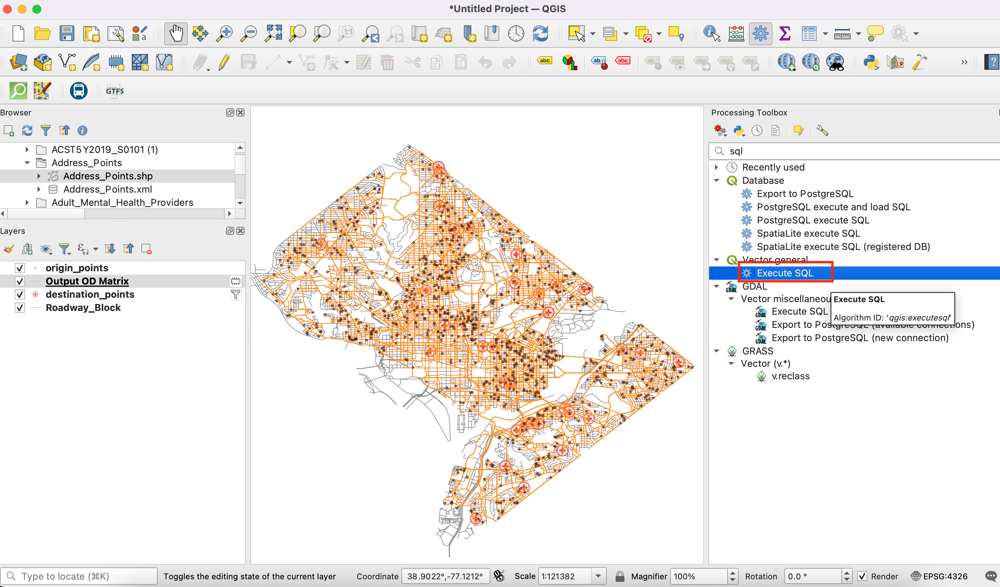
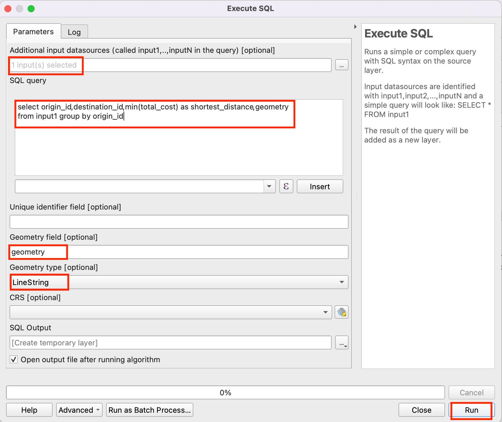
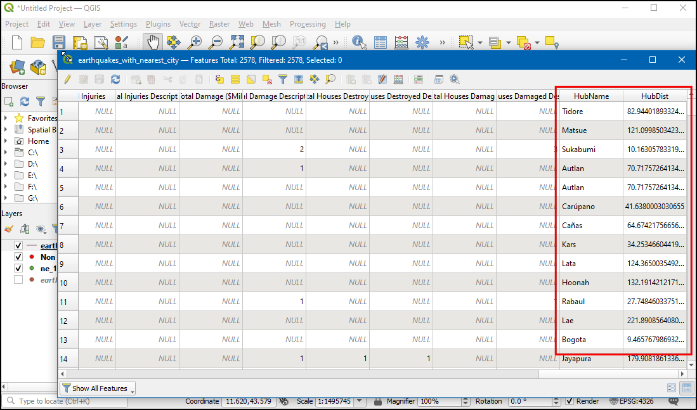

Osnovne analize in prikazi rastrov (QGIS3)¶
Veliko raziskav ustvari rastrske podatke. Raster je mreža celic, imenovanih piksli, ki so jim pripisane vrednosti. Z matematičnimi operacijami lahko s temi vrednostmi naredimo osnovne in napredne analize. QGIS ima osnovna orodja za računanje z rastri vgrajena v orodju Raster Calculator. V tej vadnici bomo raziskali osnove možnosti oblikovanja rastrskih slojev in zmogljivosti rastrskega računala.
Pregled naloge¶
Uporabili bomo podatke o gostoti prebivalcev in ustvarili tematsko karto s spremembami števila prebivalcev med leti 2000 in 2010.
Česa se bomo še naučili¶
Kako kopirati (copy/paste) sloge med sloji
Pridobivanje podatkov¶
Uporabili bomo podatkovni sloj Gridded Population of the World (GPW) v4, ki so ga pripravili na Columbia University. Natančneje, poiskali bomo sloj Population Count, ki za celotno Zemljo v ločljivosti 2,5 stopinje podaja podatke za leti 2000 in 2010 v zapisu GeoTIFF. Za prenos podatkov boste potrebovali brezlačen račun Earth Data account.

Kopijo podatkov lahko poberete tudi neposredno s spodnjega naslova:
gpw-v4-population-count-rev11_2000_2pt5_min_tif.zip
gpw-v4-population-count-rev11_2010_2pt5_min_tif.zip
Vir podatkov[GPW4]_
Postopek¶
Odprite QGIS in poiščite prenesene datoteke na orodni plošči Browser. Razširite datoteko
gpw-v4-population-count-rev11_2000_2pt5_min_tif.zipin povlecitegpw-v4-population-count-rev11_2000_2pt5_min.tifv glavno okno programa.

Na plošči Layers se pojavi nov sloj
gpw-v4-population-count-rev11_2000_2pt5_min. Po enakem postopku odprite datotekogpw-v4-population-count-rev11_2010_2pt5_min_tif.zipin v okno programa povlecitegpw-v4-population-count-rev11_2010_2pt5_min.tif.

Oglejmo si sloja. Kliknite gumb Identify v orodjarni Attributes Toolbar. Ko je orodje izbrano, kliknite katerokoli točko v glavnem oknu.

Vrednost, ki je shranjena v izbranem pikslu se bo izpisala na plošči Identify Results. Na plošči Identify Results spremenite Mode v
Top down. Tako bodo prikazane vrednosti pikslov vseh rastrov namesto samo zgornje plasti. Primerjajte vrednosti iz obeh plasti. Ker je ločljivost rastrov približno 5 km x 5 km, vrednosti pikslov predstavljajo skupno populacijo na območju (25 kvadratnih kilometrov).

Zaprite ploščo Identify Results. Ustvarimo boljši prikaz obeh slojev. Kliknite gumb Open the layer Styling panel v plošči Layers.

Na plošči Layer Styling kliknite padajoče polje Render type in izberite način prikaza
Singleband pseudocolor.

Ta način prikaza bo sloj oblikoval z barvno lestvico. Privzeta lestvica je belo-rdeča, kjer bo najmanjša vrednost dodeljena beli barvi, največja vrednost v sloju pa rdeči. Vmesnim vrednostim bo dodeljen odtenek rdeče, dobljen z linearno interpolacijo. Razširite Min / Max Value Settings`in izberite možnost ``Cumulative count cut` . Videli boste, da je vizualizacija zemljevida zdaj veliko boljša. Standardni obseg podatkov je nastavljen na 2% do 98% vrednosti podatkov, kar pomeni, da se za določanje najnižjih in največjih vrednosti ne bodo uporabljali izstopajoči kazalniki, kar ustvari veliko bolj reprezentativno vizualizacijo.

Zaprite ploščo Layer Styling. Enako oblikovanje lahko nastavimo tudi za drugi prikazani sloj. Obstaja pa lažji način prenosa oblikovanja iz enega sloja na drugega. Desno kliknite sloj
gpw-v4-population-count-rev11_2010_2pt5_minin izberite .

Desno kliknite neoblikovani sloj
gpw-v4-population-count-rev11_2000_2pt5_minin izberite .

Enaki parametri oblikovanja bodo uporabljeni za drugi sloj. Ta funkcija je še posebej uporabna, če želite primerjati različne sloje z isto kategorizacijo. Ko preklapljate vidnost zgornje plasti, lahko takoj opazite spremembe v populaciji.

Naša naloga je ustvariti tematsko karto sprememb v populacij. Izračunajmo razliko 2 slojev in ustvarimo razred, kjer vsakemu pikslu ustreza vrednost spremembe gostote prebivalstva. Izberite .
V delu Raster bands lahko izberete sloj tako, da ga dvakrat kliknete. Kanali sloja so poimenovani z imenom rastra, ki mu sledi
@in številka kanala. Ker ima vsak od naših slojev le 1 kanal, imajo imena slojev dodano samo@1. Rastrski kalkulator opravlja matematične izračune na vsakem pikslu rastra posebej. V našem primeru vpišemo enostaven izraz, s katerim od prebivalstva leta 2010 odštejemo prebivalstvo leta 2000. Vpišite spodnjo enačbo. Nato kliknite gumb … poleg Output layer.
"gpw-v4-population-count-rev11_2010_2pt5_min@1" - "gpw-v4-population-count-rev11_2000_2pt5_min@1"
Vpišite
population_change_2010_2000.tifkot ime izhodne datoteke v Output file. Kliknite OK in poženite izračun.

Ko bo računanje zaključeno, se bo v plošči Layers pojavil nov sloj
population_change_2010_2000. Spremenimo prikaz tako, da bodo jasneje vidne negativne in pozitivne spremembe prebivalstva. Kliknite gumb Open the layer Styling panel na plošči Layers.

One option is to use the similar styling technique as earlier and choose a diverging color ramp. Click the Color ramp drop-down and select
Spectralramp. Click the drop-down again and chooseInvert Color Rampto assign blues to low values and reds to high values.

Vizualizacija je dobra, vendar ni preprosta za interpretacijo. Ustvarimo boljšo karto s 4 diskretnimi kategorijami:
Upad,Rastin``Hitra rast``. Premaknite se do tabele z razredi. Držite tipko Shift in izberite vrstice. Kliknite gumb Remove selected row(s).

Spremenite način Interpolation v
Discrete. Barvno lestvico bomo ustvarili ročno. Kliknite gumb Add values manually. Vpišite-100kot Value in``Upad`` kot Label. Kategoriji pripišite modro barvo. Kategorizacija vse vrednosti, ki so manjše od vpisane vrednosti prikaže z izbrano barvo. Na karti bodo prikazane samo vrednosti negativnih sprememb prebivalstva.

Complete the color-map with suitable values. I chose
100,1000and100000as the upper-bounds for theNeutral,GrowthandHigh Growthcategories respectively. Assign colors to each of created categories, for example beige, orange and red.

Ko ste s prikazom zadovoljni, zaprite ploščo Layer Styling. Ustvarili ste tematsko karto sprememb prebivalstva.